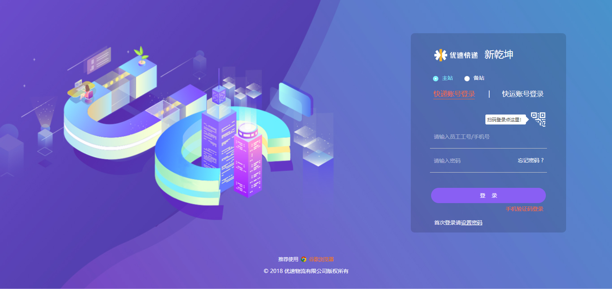

在普通人眼里只看到货物从北京运输到上海这么简单，而作为快递人我们必须要清楚，每一个场景都离不开信息化的支撑。
作为一个快递负责人，您要做好心理准备，因为接下来您要面对一系列的系统要学习，包括接单、取件、发车、派件、异常处理等各种信息处理，那是否要记很多系统登录域名呢？当然不用！优速物流科技开创了新乾坤系统，集合了多个系统模块，登录一个系统就可以操作多个子系统的功能，网点平时的业务和管理都可以通过这个系统来实现，作为新加盟优速的网点老板，您很有必要了解一下：
新乾坤系统登录页：
小优教您如何登录新乾坤系统
- 建议使用“谷歌浏览器”登录my.uce.cn;
- 输入网点负责人工号或手机号；
- 选择“首次登录请设置密码”通过短信验证码设置登录密码；
除以上PC端系统外，我们还为网点负责人量身定制了移动端APP，它就是“壹速通”，可以让您随时随地查看网点运营情况，有效帮您管理网点；
这么强的APP怎么下载呢？
请使用微信“扫一扫”扫描下方二维码
业务员：哇！老板APP（壹速通），那有没有“业务员APP”呢？
小优：我们对业务员也专门订做了业务员APP“优速宝”，再也不用背着沉重的“砖头”(巴枪)揽派件了，“优速宝”APP包含了从揽件到派件的所有业务操作功能，从此让我们的业务员一“宝”在手，揽派不愁！
优速宝下载方式：请使用微信“扫一扫”扫描下方二维码
以上这么多系统该如何使用呢？
小优：我们在钉盘上传了各个系统的操作手册，您可前往钉盘→企业文件→优速物流有限公司→系统操作指导进行学习哦！
此刻
您离成功还差一步，就是购买物料，有了物料我们才可以正常的运作！
那么物料要在哪买呢？
小优：您只需登录我们的新乾坤系统，进入壹起购商城，选购网点日常必备的物料；
以上内容若您并不是很明白，有两个选择：
1、将信息再认真仔细的读一遍；
2、联系省区IT负责人（可通过钉钉查找哦）；
若以上两个办法都不好用，也可直接联系IT服务台：
1、新乾坤—点击“小优”图标，快速上报服务台
2、壹速通-IT服务台
总部IT服务热线电话： 021-31081219
未来在您运营的过程中，有任何和IT有关的问题，都可直接联系总部IT服务台。
最后，祝您开业兴隆，财兴旺。财源茂盛，达八方！